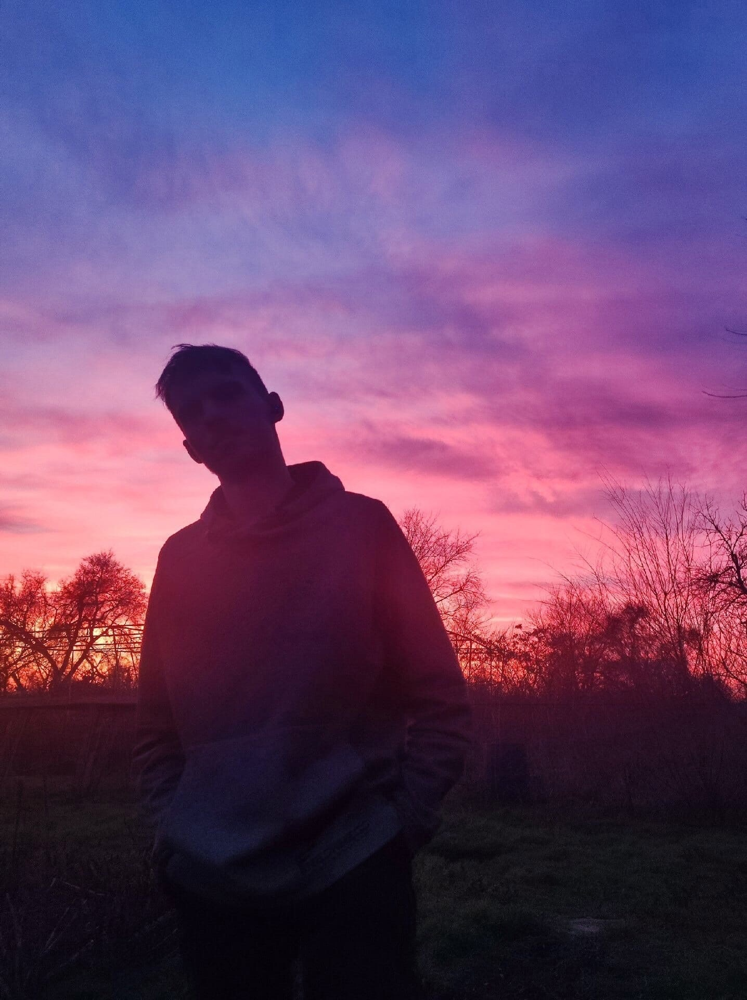

Андреев Кирилл
HTML-верстальщик, владеющий навыками наитивного HTML 5 и CSS 3.
Делаю адаптивную вёрстку grid, flex, float, придерживаюсь методологии БЭМ.
В работе использую препроцессоры Less, Scss.
Так же владею JavaScript, Bootstrap и Git. Изучил PHP, но практический и коммерческий опыт отсутствует.
Помимо этого поверхностно изучал сборщики(ReactJS/Gulp), библиотеки(jq, tailwind) и другое.
Поэтому смогу быстро освоиться и пройти необходимое обучение под технологии используемые в вашей компании.
Так же владею JavaScript, Bootstrap и Git. Изучил PHP, но практический и коммерческий опыт отсутствует.
Помимо этого поверхностно изучал сборщики(ReactJS/Gulp), библиотеки(jq, tailwind) и другое.
Поэтому смогу быстро освоиться и пройти необходимое обучение под технологии используемые в вашей компании.